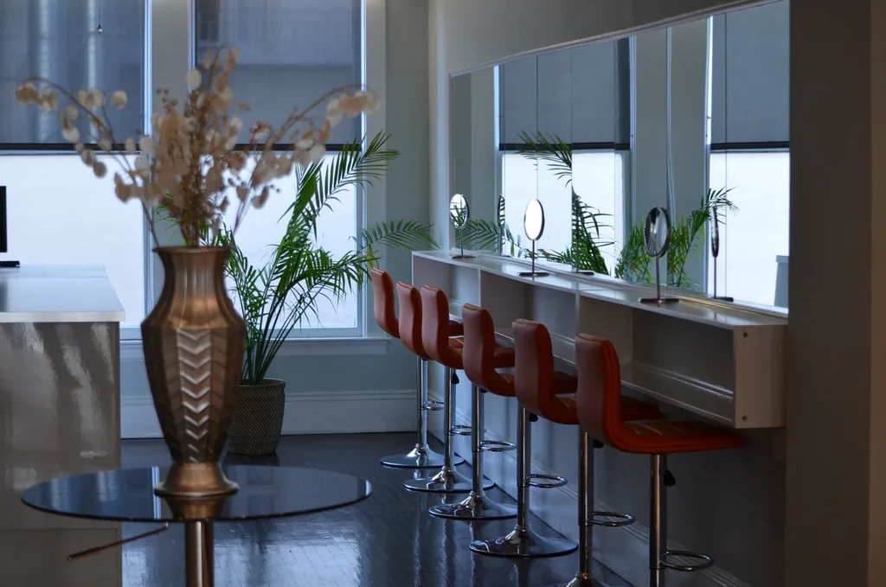
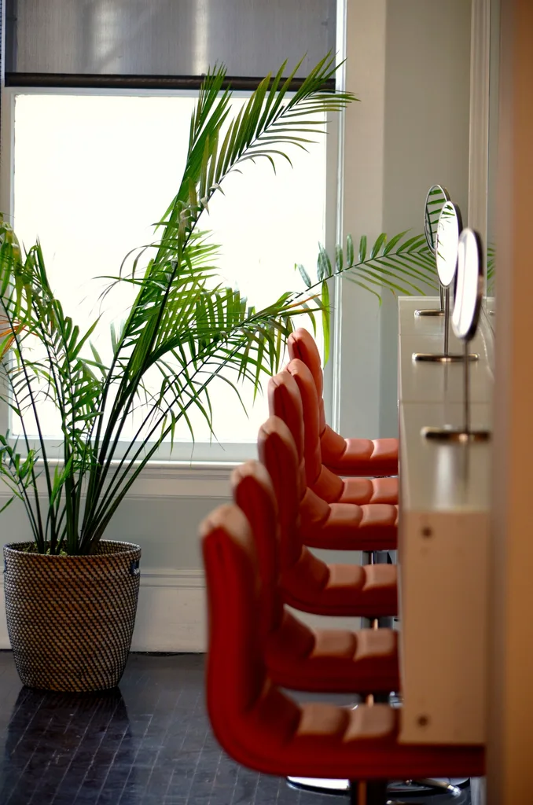

紗英 · オーナースタイリスト
表参道で十年働いたあと、「月と櫛」を開きました。スタイリングいらずのカットが得意です。

髪質、毎朝の過ごし方、手入れにかけたい時間。最初の十分で、しっかり伺います。
ダメージの少ないカラー剤を使い、施術の前には必ず頭皮をチェックします。
次のご来店まで続くように、二分でできるお手入れをお伝えします。


Head spa
Stylists
表参道で十年働いたあと、「月と櫛」を開きました。スタイリングいらずのカットが得意です。
静かな手と、よく聞く耳。週末はいちばん早く予約が埋まります。
ほとんどのお客さまが眠ってしまいます。本人はそれがいちばんの褒め言葉だそうです。

FAQ
はい。キッズチェアと絵本をご用意しています。ご予約の際にお知らせください。
現金、各種クレジットカード、PayPay、交通系ICがご利用いただけます。
LINEでご連絡ください。15分以上遅れる場合は、メニューを短くさせていただくことがあります。
Access